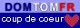

À propos de Reunionweb
Pourquoi ?
Quand je me suis connecté à l'Internet, j'ai voulu montrer à mon entourage qu'on pouvait trouver plein de choses sur le web.
— C'est quoi ton île natale ?
En tapotant La Réunion dans www.yahoo.com, je n'ai eu droit qu'aux réunions Tupperware et autres rassemblements d'étudiants étasuniens. Déception.
A peine quelques mois plus tard, je découvrais les différents fournisseurs d'accès de l'île et les sites perso qui en parlaient. Je décidai alors de faire une page de liens sur ma page ouêbe. Le web réunionnais foisonne et évolue sans cesse et ma modeste page a évolué pour devenir le site que vous avez sous les yeux.
Comment ?
Les sites présentés sont choisi en fonction de leur qualité et selon le thème abordé chaque mois qui change en fonction de l'actualité. Chaque lien fait d'une demande de liaison aux auteurs des sites présentés. Aucune réponse négative n'a été reçu
à ce jour. Si vous trouvez quelque chose à en redire,
vous pouvez écrire à l'auteur.
Certains sites ont hélas disparu avec le temps, Ils ont été
suprimés mais la description qui les accompagne reste, même si elle
se sent un peu seule à regret. Si vous découvrez d'autres
liens cassés, n'hésitez pas à me
prévenir.
Pareillement certains sites web se transforment et je dois revoir mon jugement. d'autre sites font leur apparition et je prends parfois la peine de retoucher en italique les commentaires mensuels toujours pour apporter des précisions. Les anciens articles ne sont donc pas si vieux que ça.
Quand ?
Chaque mois un nouvel article présente de nouveaux liens vers des sites réunionnais ou parlant de la Réunion.
Récompenses
Depuis sa sortie, ce site a reçu plusieures récompenses dont la mise en avant dans les sites ou annuaires réunionnais.
|  |
Avec quoi ?
Plusieures lectures m'ont aidée a écrire les premiers articles de la rubrique découverte :
- magazine Géo (fev 1991)
- La Réunion, Jalons pour une histoire (1996)
- Visages et Paysages de la Réunion par Alain Grain (1988)
- La Réunion de Roger Vailland (1952)
- Diverses aides par mail signalées comme contributions
- Le contenu des sites web cités ainsi que Wikipedia.
Les logiciels utilisés pour faire ce site sont des logiciels libres.
Qui ?
Je m'appelle Alix Guillard. et vous pouvez m'écrire à propos de ce site. Voyez aussi ma page perso.
Où ?
Le site est hébergé sur un serveur personnel. Est-il besoin de rappeler que, bien évidement, le contenu de ce site n'engage pas la responsabilité de l'hébergeur mais uniquement celle de l'auteur.